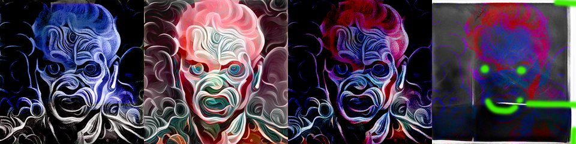

by Hulki Okan Tabak · Async Art Master #5599 · four-phase · time rule: UTC
Updates four times a day to reflect sunrise / day / sunset / night cycles.

Sunrise 06:00–06:59 · Day 07:00–17:59 · Sunset 18:00–18:59 · Night 19:00–05:59 (UTC)
The full-size files live on IPFS; each is linked on three public gateways, in the order to try them (gateway.pinata.cloud, ipfs.io, dweb.link). Every line says what our own check found: 5 we keep this file pinned, 1 our own copy, pinned here and verified on upload.
QmcW6d5PXkWaVX… gateway.pinata.cloud · ipfs.io · dweb.link — we keep this file pinned, checked 2026-09-23 09:13QmXCg7Mzi1LdLD… gateway.pinata.cloud · ipfs.io · dweb.link — we keep this file pinned, checked 2026-09-23 09:13QmYFfjxh9Es6M5… gateway.pinata.cloud · ipfs.io · dweb.link — we keep this file pinned, checked 2026-09-23 09:13QmVfoqcJFfvqpU… gateway.pinata.cloud · ipfs.io · dweb.link — we keep this file pinned, checked 2026-09-23 09:13bafybeicsav6hl… gateway.pinata.cloud · ipfs.io · dweb.link — our own copy, pinned here and verified on upload, checked 2026-09-22QmeGPg7N3aCt8T… gateway.pinata.cloud · ipfs.io · dweb.link — we keep this file pinned, checked 2026-09-23 09:13QmXCg7Mzi1LdLD… gateway.pinata.cloud · ipfs.io · dweb.link — we keep this file pinned, checked 2026-09-23 09:13QmXCg7Mzi1LdLD… gateway.pinata.cloud · ipfs.io · dweb.link — we keep this file pinned, checked 2026-09-23 09:13QmVfoqcJFfvqpU… gateway.pinata.cloud · ipfs.io · dweb.link — we keep this file pinned, checked 2026-09-23 09:13QmcW6d5PXkWaVX… gateway.pinata.cloud · ipfs.io · dweb.link — we keep this file pinned, checked 2026-09-23 09:13QmYFfjxh9Es6M5… gateway.pinata.cloud · ipfs.io · dweb.link — we keep this file pinned, checked 2026-09-23 09:13Portraits of Lunar Madness is a IV set piece where photography, generative elements, artificial intelligence, experimentation led to a set of images which were processed with the same mindset but with different tools that led to a set of images which were processed with a different mindset and different tools and we were all mad. by still zane Hulki Okan Tabak in the year of the wooly mongoose 22 a 1x1 with a soul of 4x4 hinted discreetly on Nesinkrona Arto
async.art · OpenSea · Etherscan
Generated archive pages. Content identifiers point to the public IPFS network.